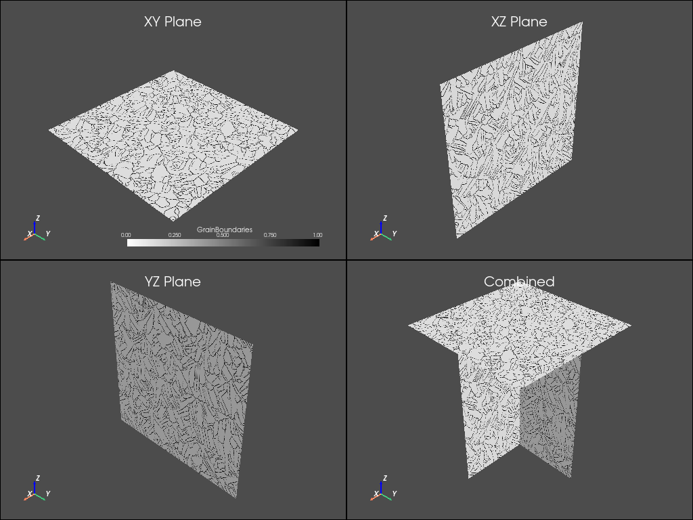
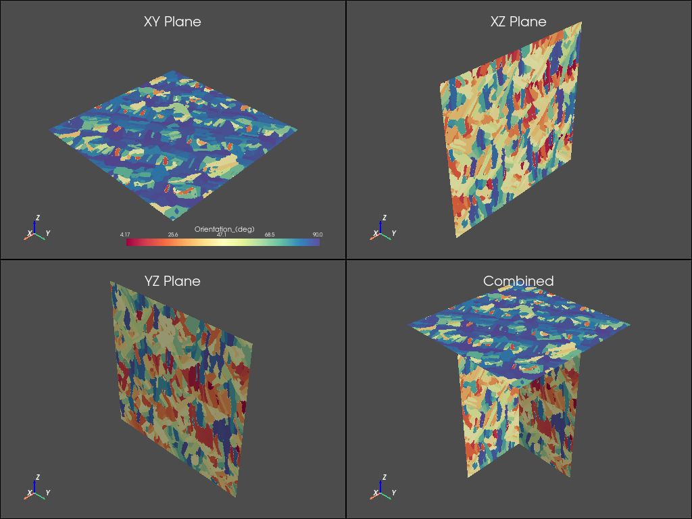
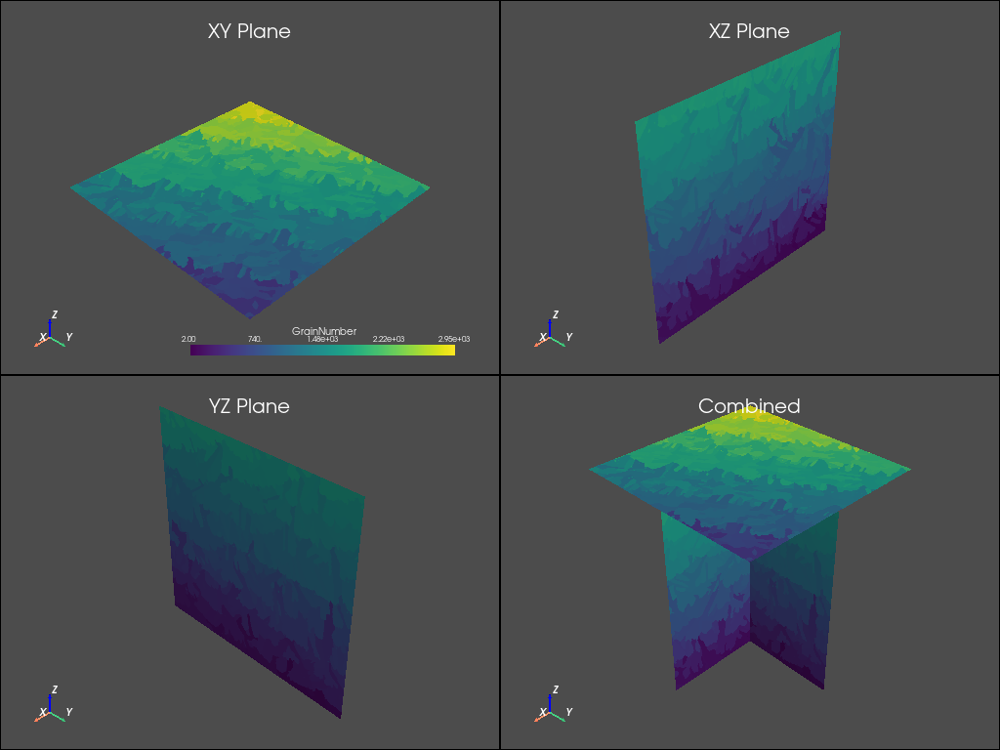

Note
Click here to download the full example code
Optimization Workflow Analysis#
This tutorial shows how you can use PyAdditive to perform machine parameter optimization.
Units are SI (m, kg, s, K) unless otherwise noted.
First, connect to the Additive service.
from matplotlib import colors
from matplotlib.colors import LinearSegmentedColormap as colorMap
import matplotlib.pyplot as plt
from matplotlib.ticker import PercentFormatter
import numpy as np
import pyvista as pv
import ansys.additive as pyadditive
additive = pyadditive.Additive()
Out:
user data path: /home/runner/.local/share/ansys-pyadditive
Perform A Single Bead Evaluation#
Here we simulate multiple single beads using various laser power and scan speed combinations.
# Select a material to use for the evaluation
material = additive.get_material("17-4PH")
# Specify the laser power and scan speed values to use
initial_powers = [50, 170, 340, 510, 700]
initial_scan_speeds = [0.35, 0.75, 1.25, 1.75, 2.25, 2.5]
# Specify length of the bead
bead_length = 0.001
# Create a list of machines, one per power and scan speed combination.
# We use a comprehension to create the list.
machines = [
pyadditive.AdditiveMachine(laser_power=p, scan_speed=s)
for p in initial_powers
for s in initial_scan_speeds
]
inputs = []
for count, machine in enumerate(machines):
inputs.append(
pyadditive.SingleBeadInput(
id=f"single-bead-opt-{count}",
material=material,
machine=machine,
bead_length=bead_length,
)
)
Run The Simulations#
The simulate method returns a list of summaries. In this case they are of
type SingleBeadSummary.
sb_summaries = additive.simulate(inputs)
Out:
Executing 30 simulations
Completed 1 of 30 simulations
Completed 2 of 30 simulations
Completed 3 of 30 simulations
Completed 4 of 30 simulations
Completed 5 of 30 simulations
Completed 6 of 30 simulations
Completed 7 of 30 simulations
Completed 8 of 30 simulations
Completed 9 of 30 simulations
Completed 10 of 30 simulations
Completed 11 of 30 simulations
Completed 12 of 30 simulations
Completed 13 of 30 simulations
Completed 14 of 30 simulations
Completed 15 of 30 simulations
Completed 16 of 30 simulations
Completed 17 of 30 simulations
Completed 18 of 30 simulations
Completed 19 of 30 simulations
Completed 20 of 30 simulations
Completed 21 of 30 simulations
Completed 22 of 30 simulations
Completed 23 of 30 simulations
Completed 24 of 30 simulations
Completed 25 of 30 simulations
Completed 26 of 30 simulations
Completed 27 of 30 simulations
Completed 28 of 30 simulations
Completed 29 of 30 simulations
Completed 30 of 30 simulations
Plot Individual Meltpool Statistics#
sb_summaries.sort(key=lambda s: (s.input.machine.laser_power, s.input.machine.scan_speed))
nrows = len(initial_powers)
ncols = len(initial_scan_speeds)
fig, axs = plt.subplots(nrows, ncols, figsize=(15, 15), layout="constrained")
for r in range(nrows):
for c in range(ncols):
i = r * nrows + c
mp = sb_summaries[i].melt_pool
axs[r][c].plot(mp.laser_x, mp.width, label="width")
axs[r][c].plot(mp.laser_x, mp.reference_width, label="ref width")
axs[r][c].plot(mp.laser_x, mp.depth, label="depth")
axs[r][c].plot(mp.laser_x, mp.reference_depth, label="ref depth")
axs[r][c].plot(mp.laser_x, mp.length, label="length")
axs[r][c].legend()
axs[r][c].set_xlabel(f"Bead Length (m)")
axs[r][c].set_ylabel(f"Melt Pool (m)")
title = (
"Power "
+ str(sb_summaries[i].input.machine.laser_power)
+ "W, Scan Speed "
+ str(sb_summaries[i].input.machine.scan_speed)
+ "m/s"
)
axs[r][c].set_title(title)
![Power 50W, Scan Speed 0.35m/s, Power 50W, Scan Speed 0.75m/s, Power 50W, Scan Speed 1.25m/s, Power 50W, Scan Speed 1.75m/s, Power 50W, Scan Speed 2.25m/s, Power 50W, Scan Speed 2.5m/s, Power 50W, Scan Speed 2.5m/s, Power 170W, Scan Speed 0.35m/s, Power 170W, Scan Speed 0.75m/s, Power 170W, Scan Speed 1.25m/s, Power 170W, Scan Speed 1.75m/s, Power 170W, Scan Speed 2.25m/s, Power 170W, Scan Speed 2.25m/s, Power 170W, Scan Speed 2.5m/s, Power 340W, Scan Speed 0.35m/s, Power 340W, Scan Speed 0.75m/s, Power 340W, Scan Speed 1.25m/s, Power 340W, Scan Speed 1.75m/s, Power 340W, Scan Speed 1.75m/s, Power 340W, Scan Speed 2.25m/s, Power 340W, Scan Speed 2.5m/s, Power 510W, Scan Speed 0.35m/s, Power 510W, Scan Speed 0.75m/s, Power 510W, Scan Speed 1.25m/s, Power 510W, Scan Speed 1.25m/s, Power 510W, Scan Speed 1.75m/s, Power 510W, Scan Speed 2.25m/s, Power 510W, Scan Speed 2.5m/s, Power 700W, Scan Speed 0.35m/s, Power 700W, Scan Speed 0.75m/s](../_images/sphx_glr_05_optimization_workflow_001.png)
Plot Meltpool Average Depth Over Width Verses Laser Power And Scan Speed#
Here we create a “watermelon” plot to visualize the desired range for laser
power and scan speed. The criteria used is the melt pool average depth over
width. The acceptable range is defined by dwMin and dwMax below. The
combinations that fall in this range will be used in the porosity evaluation.
# Gather plot values
powers = []
scan_speeds = []
depth_over_width = []
for s in sb_summaries:
mp = s.melt_pool
ave_width = np.average(mp.width)
ave_depth = np.average(mp.depth)
powers.append(s.input.machine.laser_power)
scan_speeds.append(s.input.machine.scan_speed)
depth_over_width.append(ave_depth / ave_width if ave_width else 0)
# Create plot, adjust dwMin and dwMax for desired acceptable range.
dwMin = 0.37
dwMax = 0.6
contour_gradient = []
marker_colors = []
fig, ax = plt.subplots(figsize=(20, 10))
for i in range(len(depth_over_width)):
if dwMin < depth_over_width[i] < dwMax:
contour_gradient.append(0)
marker_colors.append("blue")
else:
contour_gradient.append(abs(((dwMax + dwMin) / 2) - depth_over_width[i]))
marker_colors.append("black")
txt = "{}".format(round(depth_over_width[i], 2))
ax.annotate(
str(txt),
(scan_speeds[i], powers[i] + 25),
verticalalignment="top",
horizontalalignment="center",
)
colMap = colorMap.from_list("", ["green", "yellow", "red", "red"])
ax.tricontourf(scan_speeds, powers, contour_gradient, cmap=colMap, levels=255)
ax.scatter(scan_speeds, powers, c=marker_colors, marker="d", s=100, facecolor="none")
ax.use_sticky_edges = False
ax.margins(0.075)
ax.set_title("Melt Pool Depth/Width")
ax.set_xlabel(f"Laser Scan Speed (m/s)")
ax.set_ylabel(f"Laser Power (W)")

Out:
Text(208.34722222222223, 0.5, 'Laser Power (W)')
Perform A Porosity Evaluation#
Here we filter the results from the single bead simulations and combine them
with various hatch spacing values to run porosity simulations. The filter
criteria used is a range of average meltpool depth over width values. This range
is defined by dwMin and dwMax above.
# Determine laser power and scan speed combinations of interest
# We narrow the range from what was used earlier only to reduce simulation time
dwMin = 0.45
dwMax = 0.55
ps_of_interest = []
for i, dw in enumerate(depth_over_width):
if dwMin < dw < dwMax:
ps_of_interest.append((powers[i], scan_speeds[i]))
# Vary hatch spacing, valid hatch spacing: 6e-5 to 2e-4
hatch_spacings = [6e-5, 1e-4, 2e-4]
# Create a list of machines
machines = [
pyadditive.AdditiveMachine(laser_power=ps[0], scan_speed=ps[1], hatch_spacing=h)
for ps in ps_of_interest
for h in hatch_spacings
]
# Create a list of PorosityInputs, one per machine
inputs = []
for count, machine in enumerate(machines):
inputs.append(
pyadditive.PorosityInput(
id=f"porosity-opt-{count}",
material=material,
machine=machine,
size_x=0.001,
size_y=0.001,
size_z=0.001,
)
)
# Run the simulations
porosity_summaries = additive.simulate(inputs)
Out:
Executing 12 simulations
Completed 1 of 12 simulations
Completed 2 of 12 simulations
Completed 3 of 12 simulations
Completed 4 of 12 simulations
Completed 5 of 12 simulations
Completed 6 of 12 simulations
Completed 7 of 12 simulations
Completed 8 of 12 simulations
Completed 9 of 12 simulations
Completed 10 of 12 simulations
Completed 11 of 12 simulations
Completed 12 of 12 simulations
Perform A Microstructure Evaluation#
Here we filter the results of the porosity simulations based upon the solid ratio value. For results above this value we run microstructure simulations to determine if the resulting build has the desired grain properties.
# Specify the minimum acceptable solid ratio
min_solid_ratio = 0.99
# Create a list of machines with the properties of the porosity summaries
# which meet the solid ratio criteria
machines = [
pyadditive.AdditiveMachine(
beam_diameter=p.input.machine.beam_diameter,
hatch_spacing=p.input.machine.hatch_spacing,
heater_temperature=p.input.machine.heater_temperature,
laser_power=p.input.machine.laser_power,
layer_rotation_angle=p.input.machine.layer_rotation_angle,
layer_thickness=p.input.machine.layer_thickness,
scan_speed=p.input.machine.scan_speed,
slicing_stripe_width=p.input.machine.slicing_stripe_width,
starting_layer_angle=p.input.machine.starting_layer_angle,
)
for p in porosity_summaries
if p.solid_ratio >= min_solid_ratio
]
# Create simulation inputs, one per machine
inputs = []
for count, machine in enumerate(machines):
inputs.append(
pyadditive.MicrostructureInput(id=f"micro-opt-{count}", material=material, machine=machine)
)
# Run the simulations
micro_summaries = additive.simulate(inputs)
Out:
Executing 5 simulations
Completed 1 of 5 simulations
Completed 2 of 5 simulations
Completed 3 of 5 simulations
Completed 4 of 5 simulations
Completed 5 of 5 simulations
Plot Grain 2D Visualtions#
For the plots that follow, we use only the first microstructure summary. Plotting the remaining summaries is similar.
# Function to plot the planar data
def plot_microstructure(
xy_data: any, xz_data: any, yz_data: any, scalars: str, cmap: colors.LinearSegmentedColormap
):
"""Convenience function to plot microstructure VTK data."""
font_size = 8
plotter = pv.Plotter(shape=(2, 2), lighting="three lights")
plotter.show_axes_all()
plotter.add_mesh(xy_data, cmap=cmap, scalars=scalars)
plotter.add_title("XY Plane", font_size=font_size)
plotter.subplot(0, 1)
plotter.add_mesh(xz_data, cmap=cmap, scalars=scalars)
plotter.add_title("XZ Plane", font_size=font_size)
plotter.subplot(1, 0)
plotter.add_mesh(yz_data, cmap=cmap, scalars=scalars)
plotter.add_title("YZ Plane", font_size=font_size)
plotter.subplot(1, 1)
plotter.add_mesh(xy_data, cmap=cmap, scalars=scalars)
plotter.add_mesh(xz_data, cmap=cmap, scalars=scalars)
plotter.add_mesh(yz_data, cmap=cmap, scalars=scalars)
plotter.add_title("Combined", font_size=font_size)
return plotter
# Plot first summary, change the array index to plot other summaries
summary = micro_summaries[0]
# Read VTK data into pyvista.DataSet objects
xy = pv.read(summary.xy_vtk)
xz = pv.read(summary.xz_vtk)
yz = pv.read(summary.yz_vtk)
# Create colormap to use with boundary plot
white_black_cmap = colorMap.from_list("whiteblack", ["white", "black"])
plot_microstructure(xy, xz, yz, "GrainBoundaries", white_black_cmap).show(title="Grain Boundaries")
plot_microstructure(xy, xz, yz, "Orientation_(deg)", "spectral").show(title="Orientation °")
plot_microstructure(xy, xz, yz, "GrainNumber", None).show(title="Grain Number")
- 
- 
- 
Plot Grain Statistics#
# Function to simplify plotting grain statistics
def add_grain_statistics_to_figure(
plane_data: dict, plane_str: str, diameter_axes: plt.Axes, orientation_axes: plt.Axes
):
"""Convenience function to add grain statistic plots to a figure."""
xmax = len(plane_data["diameter_um"])
diameter_axes.hist(plane_data["diameter_um"], bins=20, rwidth=0.75)
diameter_axes.set_xlabel(f"Grain Diameter (µm)")
diameter_axes.set_ylabel("Area Fraction")
diameter_axes.set_title(plane_str.upper() + " Grain Size Distribution")
diameter_axes.yaxis.set_major_formatter(PercentFormatter(xmax=xmax))
orientation_axes.hist(plane_data["orientation_angle"], bins=9, rwidth=0.75)
orientation_axes.yaxis.set_major_formatter(PercentFormatter(xmax=xmax))
orientation_axes.set_xlabel(f"Orientation Angle (°)")
orientation_axes.set_ylabel("Number Fraction")
orientation_axes.set_title(plane_str.upper() + " Orientation Angle")
# Create figure for grain statistics
fig, axs = plt.subplots(3, 2, figsize=(10, 15), tight_layout=True)
fig.suptitle("Circle Equivalence Grain Data", fontsize=16)
add_grain_statistics_to_figure(summary.xy_circle_equivalence, "xy", axs[0][0], axs[0][1])
add_grain_statistics_to_figure(summary.xz_circle_equivalence, "xz", axs[1][0], axs[1][1])
add_grain_statistics_to_figure(summary.yz_circle_equivalence, "yz", axs[2][0], axs[2][1])
plt.show()
Total running time of the script: ( 116 minutes 30.991 seconds)